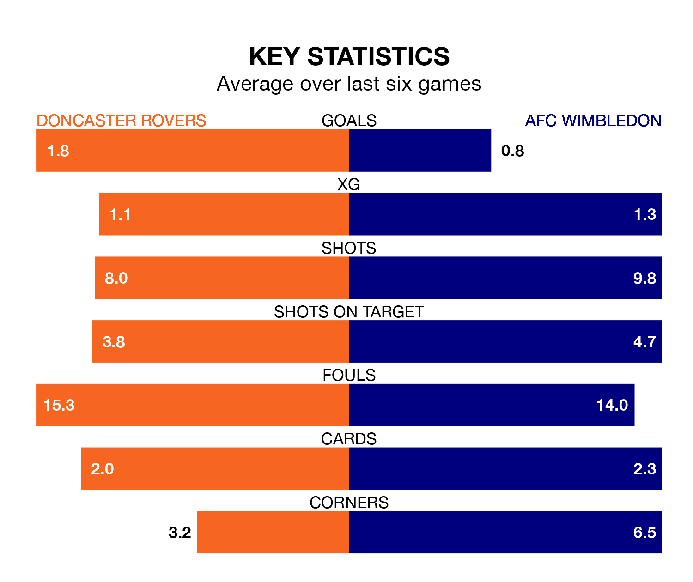

AFC Wimbledon travel to Doncaster Rovers on Saturday in EFL League Two.
The visitors come into the game on the back of a defeat in their last match, having lost to Crawley Town 1-0 at home.
The Rovers, meanwhile, won their last match, 5-1 against Grimsby Town, with their goals scored by Niall Maher, Joe Ironside, Luke Molyneux, Matthew Craig and Kyle Hurst.
In Alex Bass, Wimbledon can rely on one of the league's safest pair of hands. He has kept 11 clean sheets in his 33 appearances this season, and only one other 'keeper – Mansfield Town's Christy Pym – has been able to prevent the opposition scoring on more occasions in EFL League Two.
In Doncaster's net, Louis Jones has four clean sheets in 19 games. He has conceded a goal every 61 minutes, 40% more often than the 83 minutes between goals for Bass.
In the last 10 years, Doncaster and Wimbledon have played each other on 14 occasions. Doncaster won four of them, Wimbledon five, and they drew five times.
On average, the Rovers scored 1.2 goals and the Dons 1.4 in those matches.
Their last meeting was on November 11, when Wimbledon won 2-0 at home.
Rovers are 20th in the table after 32 games, of which they have won 10 and drawn six, earning 36 points.
The Dons are 11 places ahead of the Rovers in ninth, with 12 wins and 11 draws putting them on 47 points.
With 42 goals in 32 games so far this season, the home team are scoring at below the league average rate with 1.3 goals per game. And they are conceding more than average, letting in 57 goals at a rate of 1.8 per game.
The visitors are also below average scorers, with 1.4 goals per game, compared to a league average of 1.5. They have conceded 1.2 goals per game.
Doncaster are in mixed form in EFL League Two, with two wins and two draws from their last six games.
And also with two wins and two draws over that period, Wimbledon's form is identical – they have both taken eight points from 18.
Updated: 10:08 (UTC), 23/02/24